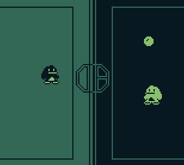

FEATURED PROJECT: Penguin Dodgeball
A simple, penguin-themed sports game programmed for the original Nintendo Gameboy using a C-based devkit library called gbdk

Programmed within the time limit of a week for a gamejam, penguin dodgeball pits two penguins, one black and white and the other white and black, against
each other in a game of dodgeball...
Click on the projects tab to learn more